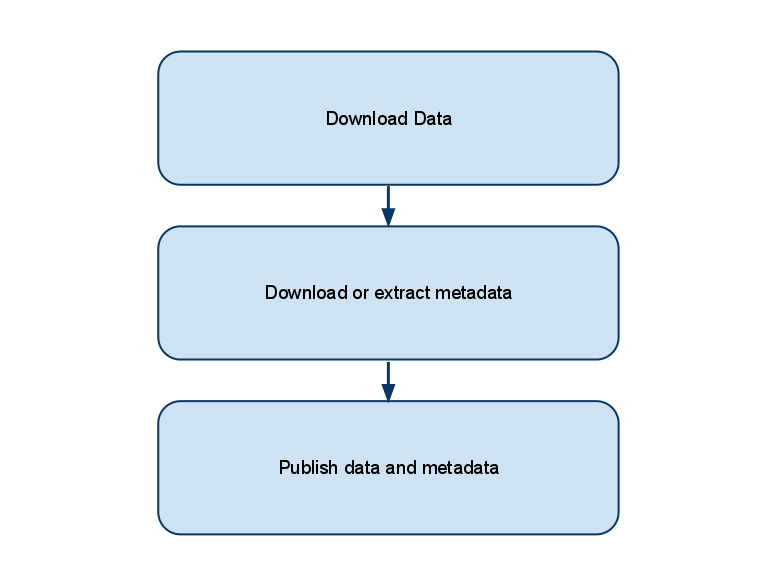

Store data and metadata
The store task is the main task that can be executed by the ARMS. This task consist in downloading data and metadata using the URLs provided by the client
and then store them in the proper service. The whole task is composed by several subtasks, as described in the image below.

The first subtask take care of downloading data from the network location provided in the input message. This step is mandatory and the input message shall provide a valid URL.
The ARMS is capable of downloading data from an HTTP or FTP server. More protocols can be added in the future in order to reach an higher level of integration.
If and when this subtask is successfull, the ARMS start executing the second one.
Downloading or extracting metadata is a complex subtask which aims to associate a metadata file to input data. In case the client has specified an URL for metadata downloading, the
ARMS tries to download it and then associates that to data. If not (specifying a metadata URL is not mandatory), the ARMS tries to extract metadata from the input data. In order to do this an
internal mechanism has been created which executes shell scripts over data. The shell script set can be configured by the user which can reuse already existing ones. For further information about how to configure this behaviour,
please refer to this section.
When data and metadata (if the second substask produces a document) are collected, the ARMS start the thrid subtask which focuses on deploying such items.
While metadata can be deployed into a CSW ebRIM catalogue only, data can be deployed in a moltitude of services. Which service receive data for deployment is
specified into the input message. For a more detailed description of the interfaces, pelase refer to the section interfaces
The store operation returns to the client an integer identifier which shall be used in the retrieve and delete operations for uniquely identifying the data and metadata.
The store operation returns immmediately (giving back the identifier) and starts downloading and publishing data and metadata asynchronously. In order to retrieve the status of the store process, the
client is supposed to use the retrieve operation.